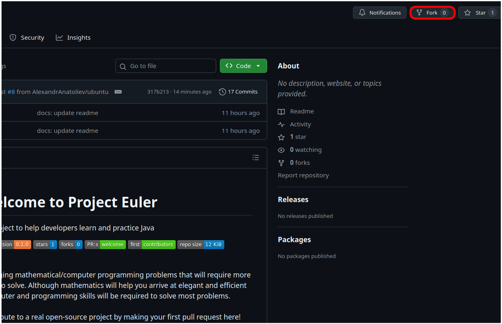
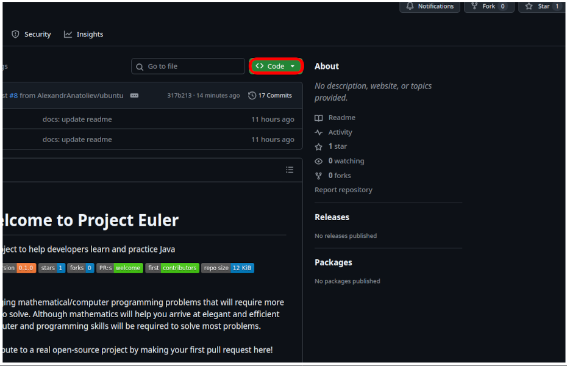
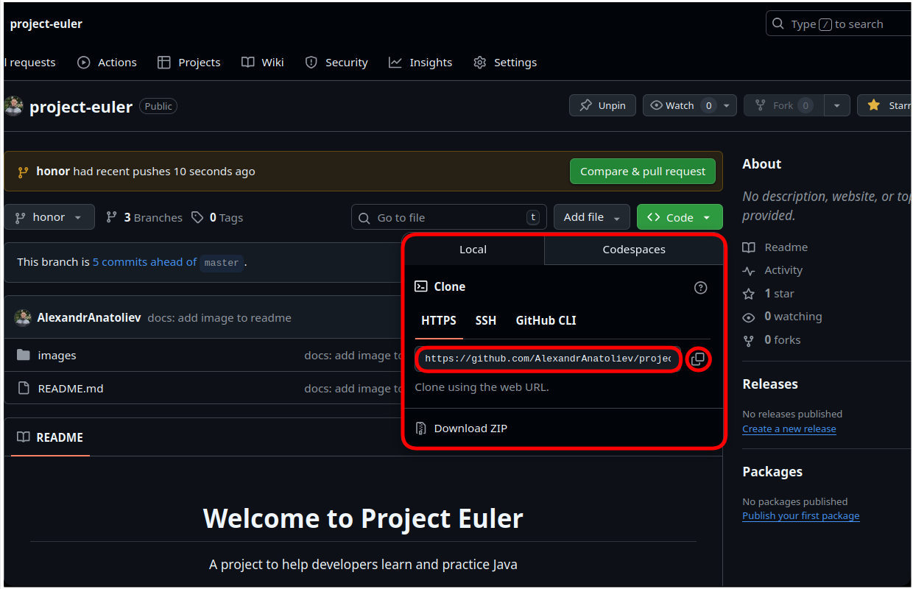
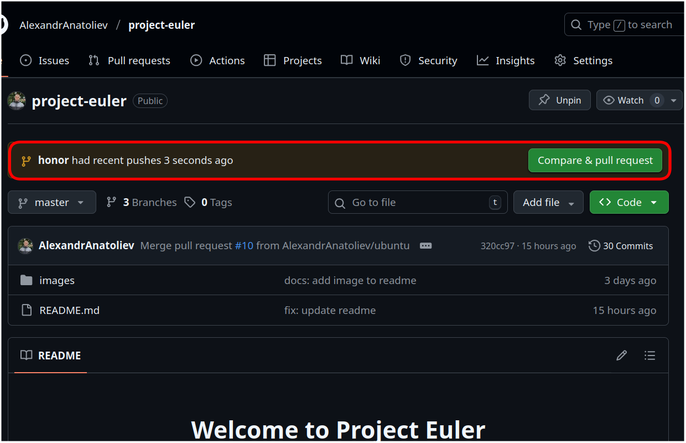
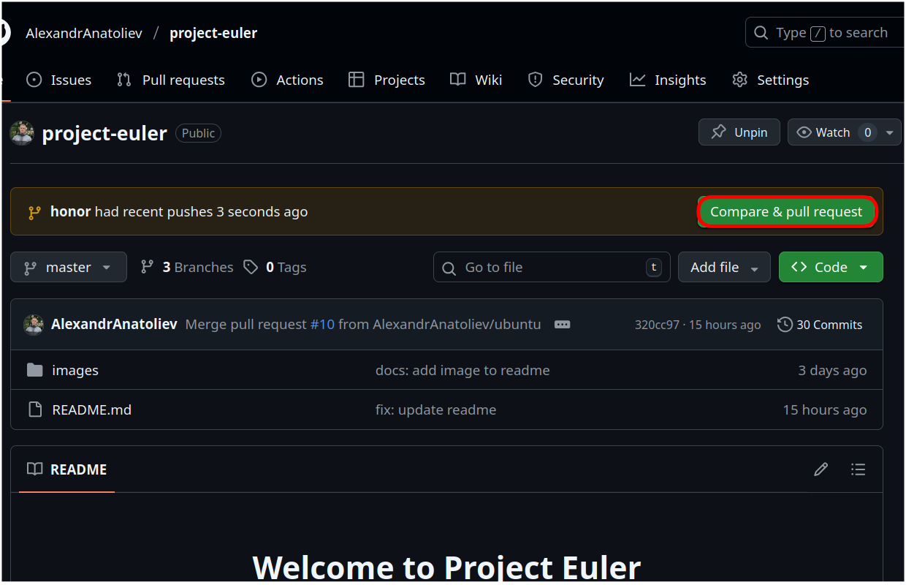
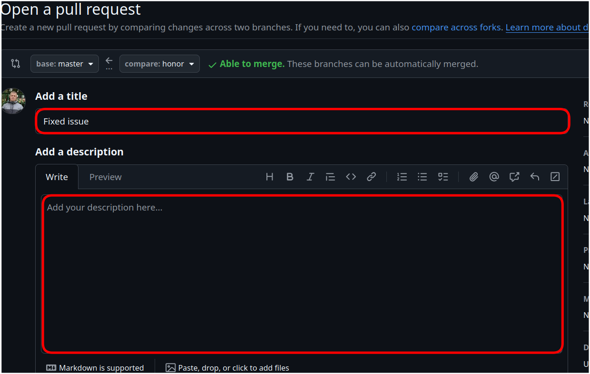
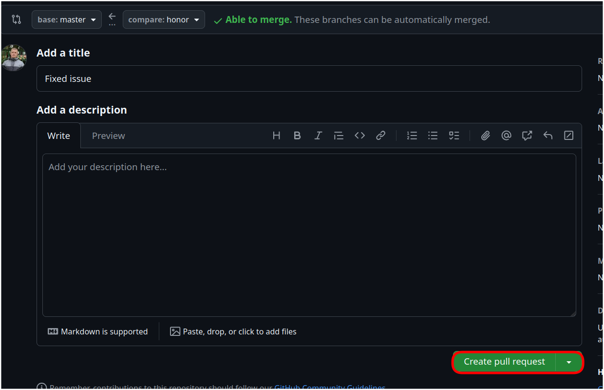

Project Euler - это опенсорс проект, который помогает изучить и по-практиковать конструкции различных языков программирования.
Этот репозиторий предоставляет уникальную возможность:
1. Сделайте "форк" этого репозитория нажатием кнопки "Fork" в правом верхнем углу страницы. Это создаст копию репозитория на вашем GitHub аккаунте.

2. Клонируйте ваш "форкнутый" репозиторий нажатием кнопки "Code":

Откроется маленькое окно:

Скопируйте из него URL и выполните на своем компьютере команду:
3. Перейдите в папку с проектом:
4. Добавьте ссылку на оригинальный репозиторий для будущих обновлений:
Примечание: здесь должен быть URL оригинального репозитория, а не "форкнутого" Вами, так что username в нем должно быть AlexandrAnatoliev, а не ваш собственный username.
5. Проверьте ремоуты для своего репозитория:
Вы должны увидеть origin (создается автоматически при клонировании) и upstream ремоуты:
origin https://github.com/<your-username>/project-euler.git (fetch) origin https://github.com/<your-username>/project-euler.git (push) upstream https://github.com/AlexandrAnatoliev/project-euler.git (fetch) upstream https://github.com/AlexandrAnatoliev/project-euler.git (push)
6. Выполните pull из upstream репозитория в вашу master ветку, чтобы синхронизировать ее с основным проектом:
7. Создайте новую ветку командой:
или
Сейчас вы готовы начать работать с issue!
Помните, каждый раз сначала делать pull из upstream репозитория, чтобы держать содержимое
вашего локального репозитория в соответствии с главным проектом.
Примечание: Рекомендую всегда создавать новую ветвь для каждого issue, который вы выполняете! Иначе pull request будут слишком большими и возможно возникнут конфликты слияния.
Проект Эйлер содержит более 800 различных задач различной трудности. Вы можете выбрать любую задачу, которую вы хотите. Вы можете также выбрать и решить несколько задач. Только не забывайте создавать новую ветвь для каждой из них.
Сначала, выберите задачу, которую вы хотите решать и откройте ее директорию:
project-euler ├── Problem1/ │ └── README.md ├── Problem2/ │ └── README.md ├── Problem3/ │ └── README.md └── README.md
Перейдите в README файл выбранной задачи, чтобы получить информацию об ее сути.
Создайте директорию для вашего решения в формате:
Например:
project-euler ├── Problem1/ │ ├── User1-cpp/ │ ├── Username2-php/ │ ├── IvanIvanov-java/ │ │ ^ │ │ └── Директория для вашего решения │ └── README.md ├── Problem2/ │ ├── User1-golang/ │ └── README.md └── README.md
После этого вы готовы решать задачу.
Добавьте файлы с исходным кодом в вашу директорию (наличие README приветствуется).
Примечание: Избегайте лишних файлов (бинарные файлы или метаданные IDE) и проверьте что ваша программа работает корректно.
Все корректные решения будут добавлены после ревью.
Примечание: вам не нужно спрашивать разрешения начать решать задачу, предложенную в issue, т.к. в этом проекте все issue открыты для новых контрибьютеров. Можно сразу же начинать работать с issue прямо сейчас! Однако помните, что на большинстве проектов вам необходимо спрашивать разрешение прежде чем начать работать с issue. Это необходимо чтобы несколько человек не начали работать над одним и тем же issue одновременно, и соответственно потратили свое время.
После того как вы решили задачу, вы готовы отправить изменения.
1. Добавьте ваши изменения в отслеживание:
2. Сделайте коммит:
3. Отправить изменения в ваш "форкнутый" репозиторий:
или
После того как вы отправили ваши изменения на GitHub, вы готовы создать pull request.




Поздравляю, Вы сделали свой первый вклад в open source на GitHub!
Можете расслабиться и подождать пока не сделают ревью вашего кода. Если все хорошо, ваш pull request вольют в основную ветку. Если нет, вам будет предложено внести изменения в ваш код.
Помните, что нужно подождать ревью вашего pull request, не закрывайте его сами. Если вас просят сделать изменения, вы можете коммититить их в ту же самую ветвь, не нужно закрывать текущий pull request и открывать новый.
Столкнувшись с затруднениями, не стесняйтесь открыть issue, написать в Discussions или мне на почту per-1986@list.ru.